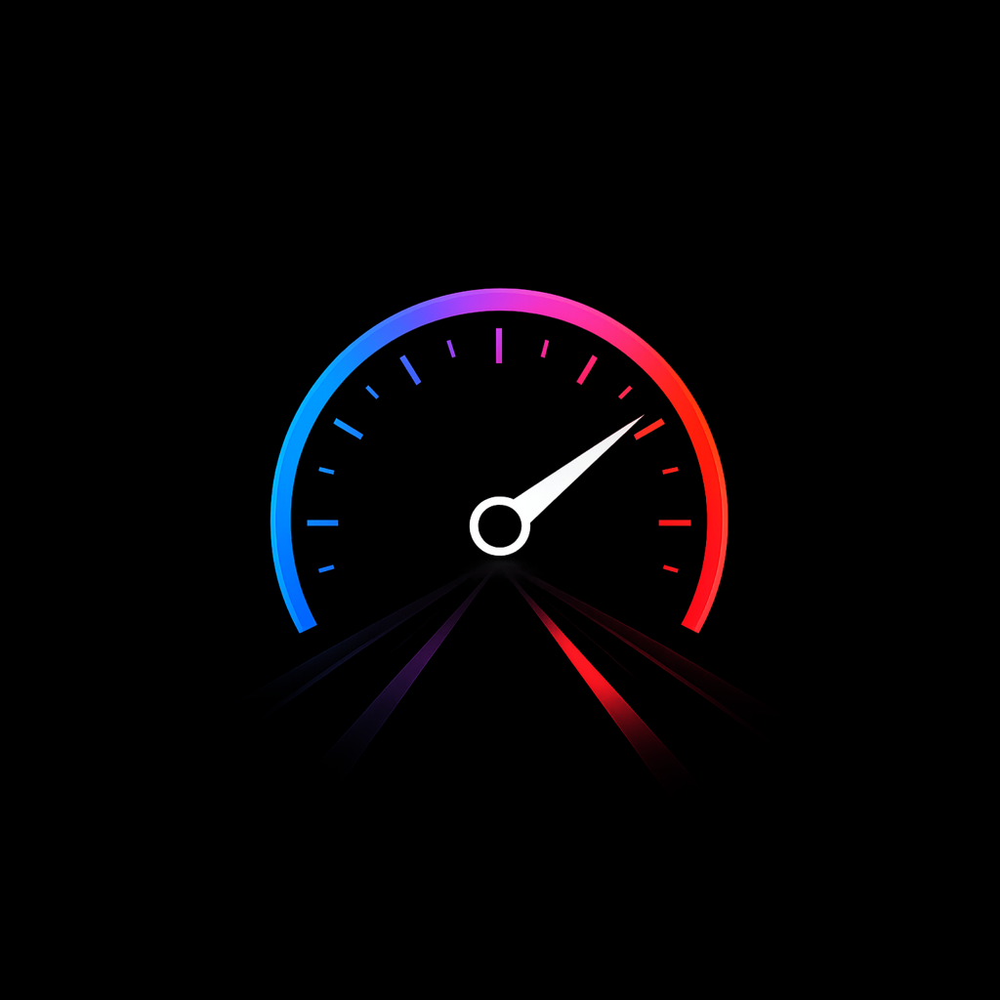
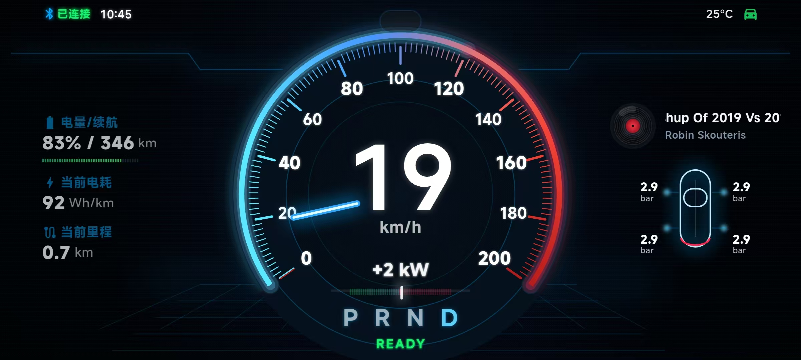
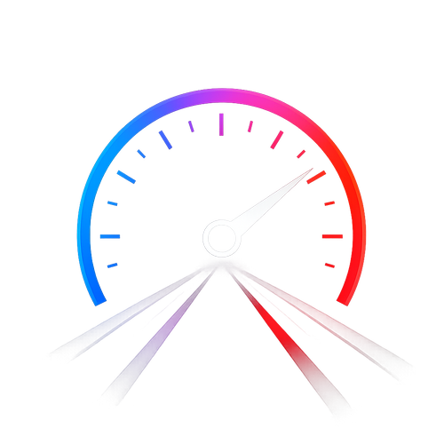
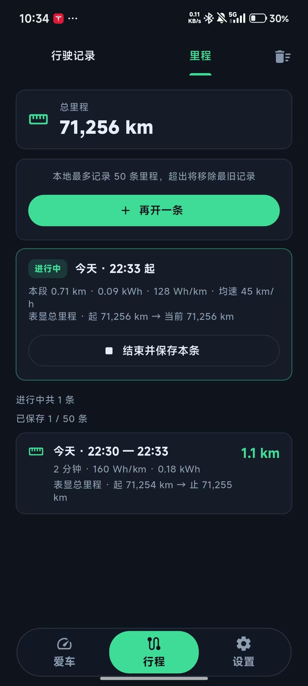

横屏沉浸仪表
大字号速度、功率和车辆状态，适合固定在车内时快速扫读。

T-Dash

Live BLE dashboardApp preview
T-Dash 聚焦驾驶时真正需要快速识别的数据。横屏仪表适合车内固定使用，竖屏页面则用于连接、查看行程和管理记录。
Why T-Dash
大字号速度、功率和车辆状态，适合固定在车内时快速扫读。
围绕蓝牙连接状态做清晰反馈，让连接、授权和恢复过程更可感知。
记录行驶里程与行程数据，日常通勤、自驾和测试都能回看。
降低夜间干扰，保留足够对比度，让数据比装饰更重要。

Screens
一个 App 覆盖驾驶中和驾驶后的两个场景：正在路上时看实时仪表，停车后回看里程和行程数据。
Download
安装包通过公开展示仓库的 GitHub Releases 分发。App 源码保持私有，网页只负责展示、下载和隐私说明。